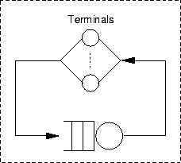
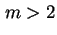
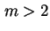

Next: หัวข้อสรุป
Up: เครือข่ายคิว
Previous: ตัวอย่าง:
Contents
Index
ระบบเครือข่ายคิวสำหรับจำลองระบบคอมพิวเตอร์
การจำลองระบบคอมพิวเตอร์โดยใช้เครือข่ายคิวแบบเริ่มแรกได้แก่ แบบจำลองการซ่อมบำรุง (Machine Repairman Model) และแบบจำลองเครื่องบริการกลาง (Central Server Model) ดังแสดงในรูป 6.6 และ 6.7, ตามลำดับ
ในแบบจำลองการซ่อมบำรุง มาจากการจำลองร้านซ่อมเครื่องที่ประกอบด้วยเครื่องจักรที่ทำงานอยู่จำนวนมาก และจุดซ่อมเครื่องที่มีเครื่องบริการซ่อมหนึ่งเครื่องหรือมากกว่า เมื่อเครื่องจักรเสียหาย จะนำเครื่องจักรนั้นเข้าซ่อมในระบบ เมื่อเครื่องบริการการซ่อมว่าง ระบบดังกล่าวสามารถนำมาจำลองระบบ Time Sharing ที่ประกอบด้วย  เทอร์มินอล เมื่อผู้ใช้นั่งอยู่ที่เทอร์มินอลและเริ่มสร้างงาน (การขอรับบริการจากระบบในรูปของคำสั่ง) งานดังกล่าวจะได้รับบริการจากเครื่องบริการซ่อม (เครื่องบริการ) หลังจากงานเสร็จ ก็จะกลับมารอที่เทอร์มินอลเพื่อรอการทำตามคำสั่งต่อไป เวลาที่รอที่เทอร์มินอล เรียกว่าเวลาคิด (Thinking Time) ซึ่งเป็นระยะเวลาที่ผู้ใช้งานระบบพิจารณาผลตอบสนองที่ได้ เพื่อที่จะส่งคำสั่งต่อไป
เทอร์มินอล เมื่อผู้ใช้นั่งอยู่ที่เทอร์มินอลและเริ่มสร้างงาน (การขอรับบริการจากระบบในรูปของคำสั่ง) งานดังกล่าวจะได้รับบริการจากเครื่องบริการซ่อม (เครื่องบริการ) หลังจากงานเสร็จ ก็จะกลับมารอที่เทอร์มินอลเพื่อรอการทำตามคำสั่งต่อไป เวลาที่รอที่เทอร์มินอล เรียกว่าเวลาคิด (Thinking Time) ซึ่งเป็นระยะเวลาที่ผู้ใช้งานระบบพิจารณาผลตอบสนองที่ได้ เพื่อที่จะส่งคำสั่งต่อไป
Figure 6.6:
แบบจำลองการซ่อมบำรุง
|

|
ในแบบจำลองเครื่องบริการกลาง (Central Server Model), แสดงในรูป 6.6 ตัวประมวลผลกลาง (CPU) ถูกจำลองเป็น Central Server ที่ทำการจัดลำดับของงานที่จะไปใช้เครื่องบริการตัวอื่น (เช่น Disk A) หลังจากที่ได้รับบริการที่อุปกรณ์รับข้อมูลเข้า/ออก งานจะกลับมาที่ตัวประมวลผลกลางเพื่อทำการประมวลผลต่อ หรือรอการเรียกใช้งานอุปกรณ์รับข้อมูลเข้า/ออกครั้งต่อไป หรือออกจากระบบกลางกลับไปที่เทอร์มินอล เนื่องจากงานเสร็จสมบูรณ์
Figure 6.7:
แบบจำลองเครื่องบริการกลาง
|
|
ในแบบจำลองระบบคอมพิวเตอร์ ประกอบด้วยอุปกรณ์สามลักษณะได้แก่ 1. อุปกรณ์ที่ประกอบด้วยเครื่องบริการเพียงเครื่องเดียวที่เวลาในการให้บริการไม่ขึ้นอยู่กับความยาวของคิวหรือจำนวนงานในระบบ อุปกรณ์ลักษณะดังกล่าวเรียกว่า Fixed Capacity Service Centers ตัวอย่างเช่น ตัวประมวลผลกลางอาจถูกจำลองโดยใช้ Fixed Capacity Service Center 2. อุปกรณ์ที่ไม่มีการเข้าคิว งานที่เข้ามาใช้บริการใช้เวลาเท่ากันหมดไม่ว่าจะมีจำนวนงานเท่าใดในระบบ อุปกรณ์ในลักษณะดังกล่าวเรียกว่า ศูนย์หน่วงเวลา (Delay Center หรือ Infinite Server), IS
เช่นเราสามารถจำลองกลุ่มของเทอร์มินอลโดยใชั IS
3. อุปกรณ์ที่ค่าอัตราการบริการแปรผันกับค่าภาระงานหรือจำนวนงานในระบบ อุปกรณ์ในลักษณะดังกล่าวเรียกว่า Load-Dependent Service Centers. ตัวอย่างของ Load-Dependent Service Centers ได้แก่  คิว (เมื่อ ) เนื่องจากค่าอัตราการบริการเพิ่มขึ้น จำนวนเครื่องบริการถูกใช้งานมากขึ้น หรือตัวกลางในการส่งผ่านข้อมูลของการเชื่อมต่อเครือข่าย
คิว (เมื่อ ) เนื่องจากค่าอัตราการบริการเพิ่มขึ้น จำนวนเครื่องบริการถูกใช้งานมากขึ้น หรือตัวกลางในการส่งผ่านข้อมูลของการเชื่อมต่อเครือข่าย
Vara Varavithya
2002-03-09
![\includegraphics[width=3in]{fig/timeqt.eps}](img323.png)